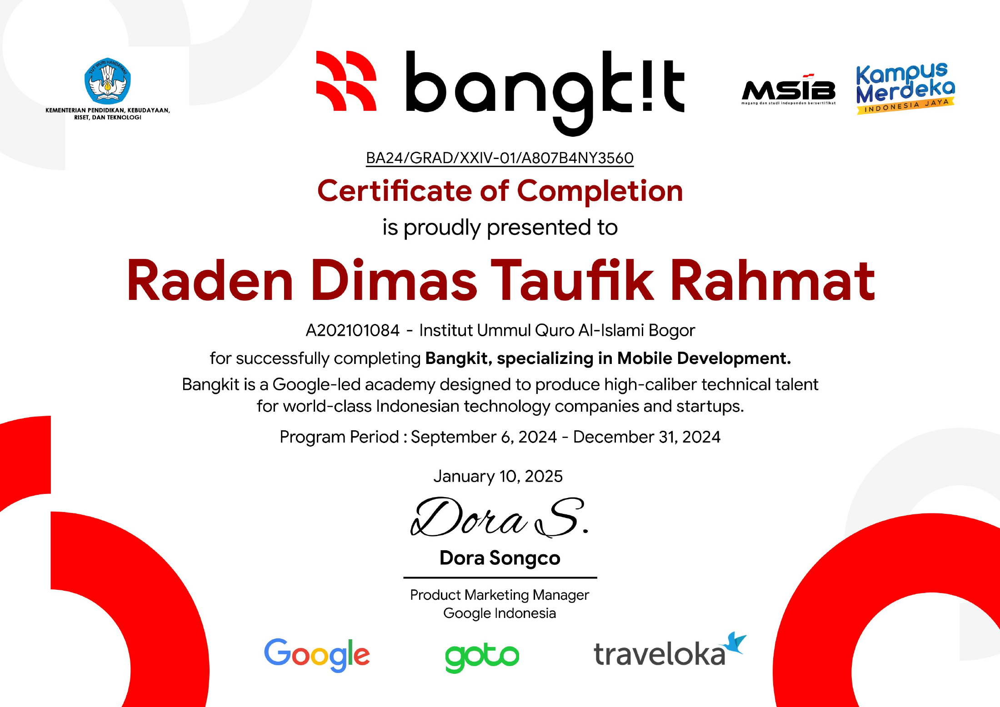
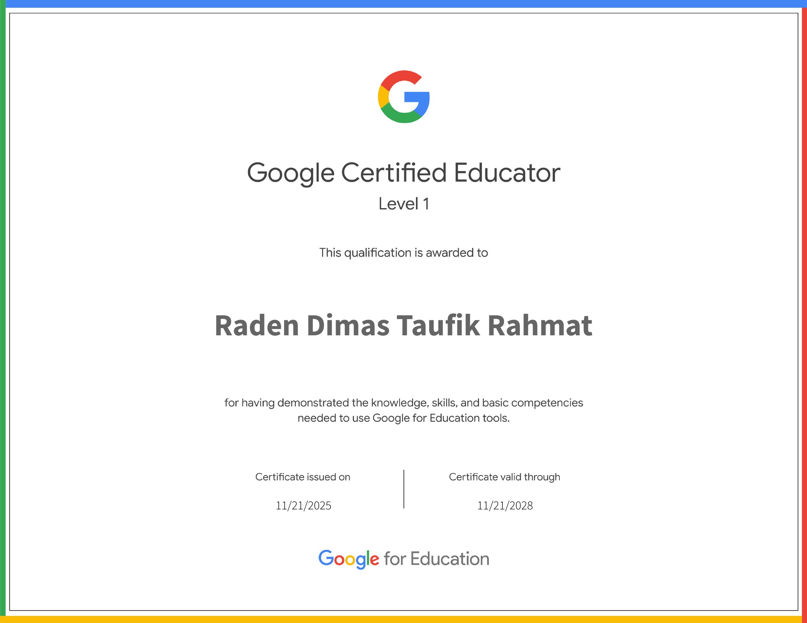
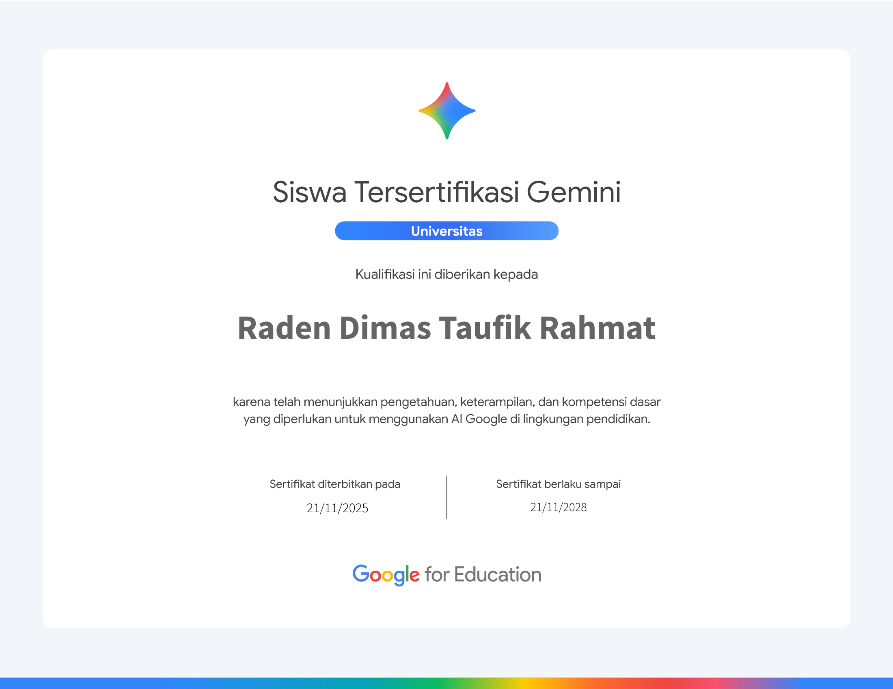
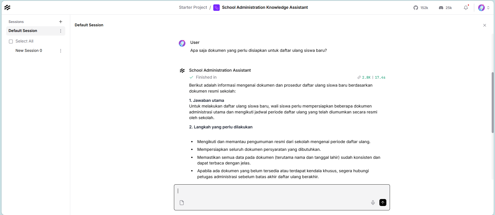
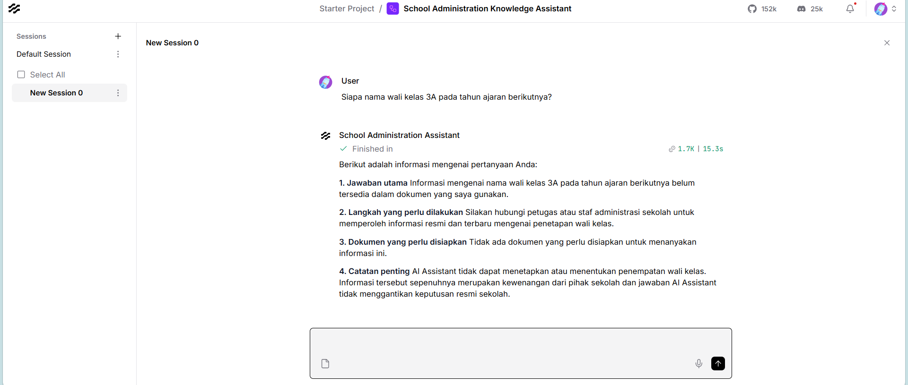

Visual terpilih
Gambar lokal yang aman untuk publikasi.
Menampilkan 12 gambar

Badan Ekraf Digital Talent 2026

Productivity with AI Bootcamp

Microsoft Elevate Data & AI

International Millennial Summit

Dicoding Bootcamp Batch 5 — Android Developer

Pelatihan Bahasa Jepang AKIRA 5

Bangkit 2024 Batch 2 — Mobile Development

Google Certified Educator Level 1

Siswa Tersertifikasi Gemini — Universitas

Pengujian daftar ulang pada Langflow Playground

Pengujian guardrail untuk informasi yang tidak tersedia

Prompt Template — School Administration Knowledge Assistant
Dokumentasi belum ditemukan
Kategori ini belum memiliki gambar publik yang aman.